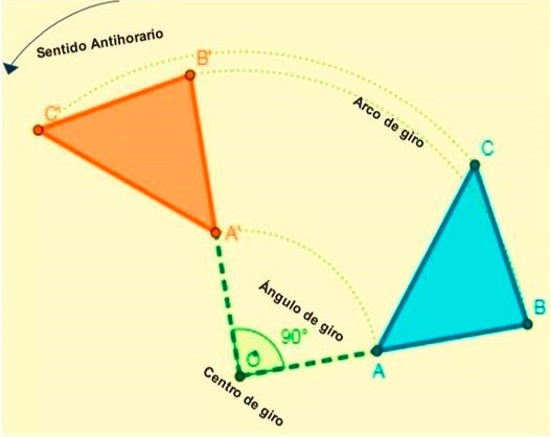
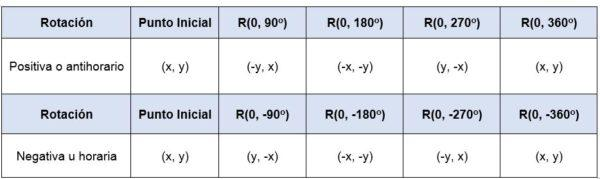
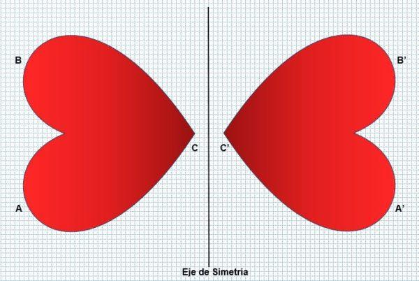
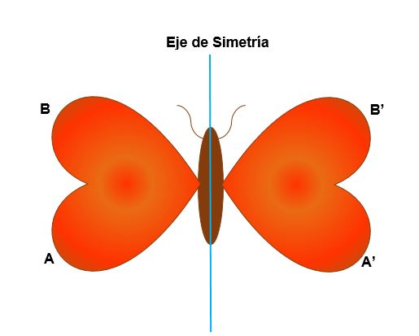
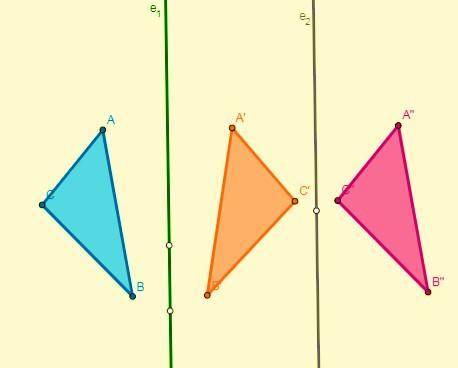

Transformações isométricas:
As transformações isométricas são mudanças de posição ou orientação de uma dada figura que não alteram a forma ou o tamanho deste. Essas transformações são classificadas em três tipos: translação, rotação e reflexão (isometria). Em geral, as transformações geométricas permitem que uma nova figura seja criada a partir de uma determinada. Uma transformação em figura geométrica significa que, de alguma forma, foi sujeita a alguma mudança; isto é, foi alterado. De acordo com o sentido do original e similares no plano, as transformações geométricas podem ser classificadas em três tipos: isométrico, isomórfico e anamórfico.
Características
As transformações isométricas ocorrem quando as magnitudes dos segmentos e os ângulos entre a figura original e a figura transformada são preservadas. Nesse tipo de transformação, nem a forma nem o tamanho da figura são alterados (são congruentes), é apenas uma mudança em sua posição, seja na orientação ou na direção. Dessa forma, os números inicial e final serão semelhantes e geometricamente congruentes. Isometria refere-se à igualdade; isto é, que as figuras geométricas serão isométricas se tiverem a mesma forma e tamanho. Nas transformações isométricas, a única coisa que pode ser observada é uma mudança de posição no plano, um movimento rígido ocorre graças ao qual a figura passa de uma posição inicial para um fim. Essa figura é chamada homóloga (similar) da original. Existem três tipos de movimentos que classificam uma transformação isométrica: translação, rotação e reflexão ou simetria.
Tipos
São aquelas isometrias que permitem mover em linha reta todos os pontos do plano em uma determinada direção e distância. Quando uma figura é transformada pela translação, ela não muda sua orientação em relação à posição inicial, nem perde suas medidas internas, as medidas de seus ângulos e lados. Esse tipo de deslocamento é definido por três parâmetros:
Para que uma transformação isométrica por conversão seja atendida, as seguintes condições devem ser atendidas:
Em um plano em que o centro é um ponto O, com coordenadas (0,0), a translação é definida por um vetor T (a, b), que indica o deslocamento do ponto inicial. Quer dizer:
P (x, y) + T (a, b) = P ‘(x + a, y + b)
Por rotação
São aquelas isometrias que permitem que a figura gire todos os pontos de um plano. Cada ponto gira seguindo um arco que possui um ângulo constante e um ponto fixo (centro de rotação). Ou seja, toda rotação será definida por seu centro de rotação e ângulo de rotação. Quando uma figura é transformada por rotação, ela mantém a medida de seus ângulos e lados. A rotação ocorre em uma determinada direção, é positiva quando a curva é no sentido anti-horário (anti-horário) e negativa quando a curva é no sentido horário.
Se um ponto (x, y) for girado em relação à origem – ou seja, seu centro de rotação é (0,0) -, em um ângulo de 90 ou 360 ou as coordenadas dos pontos serão:
No caso em que a rotação não tem um centro na origem, a origem do sistema de coordenadas deve ser transferida para a nova origem, a fim de girar a figura que tem a origem como centro. Por exemplo, se uma rotação de 90 for aplicada ao ponto P (-5,2) ou , em torno da origem e em um sentido positivo, suas novas coordenadas serão (-2,5).
Por reflexão ou simetria
São essas transformações que invertem os pontos e figuras do avião. Essa inversão pode ser em relação a um ponto ou também em relação a uma linha. Em outras palavras, nesse tipo de transformação, cada ponto da figura original é associado a outro ponto (imagem) da figura homóloga, de modo que o ponto e sua imagem estão à mesma distância de uma linha chamada eixo de simetria. Assim, a parte esquerda da figura será um reflexo da parte direita, sem alterar sua forma ou dimensões. A simetria transforma uma figura em outra igual, mas na direção oposta, como pode ser visto na imagem a seguir:
A simetria está presente em muitos aspectos, como em algumas plantas (girassóis), animais (pavão) e fenômenos naturais (flocos de neve). O ser humano reflete no rosto, considerado um fator de beleza. Reflexão ou simetria podem ser de dois tipos:
Simetria central
É essa transformação que ocorre em relação a um ponto, no qual a figura pode mudar sua orientação. Cada ponto da figura original e sua imagem têm a mesma distância de um ponto O, chamado centro de simetria. A simetria é central quando:
Essa transformação ocorre em relação ao eixo de simetria, onde cada ponto da figura inicial está associado a outro ponto da imagem e estes estão à mesma distância do eixo de simetria. A simetria é axial quando:
Composição
Uma composição de transformações isométricas refere-se à aplicação sucessiva de transformações isométricas na mesma figura.
Composição de uma tradução
A composição de duas traduções resulta em outra tradução. Quando realizado no plano, no eixo horizontal (x) somente as coordenadas desse eixo mudam, enquanto as coordenadas do eixo vertical (y) permanecem as mesmas, e vice-versa.
Composição de uma rotação
A composição de duas voltas com o mesmo centro resulta em outra volta, que tem o mesmo centro e cuja amplitude será a soma das amplitudes das duas voltas. Se o centro das voltas tiver um centro diferente, o corte da bissetriz de dois segmentos de pontos similares será o centro de rotação.
Composição de uma simetria
Nesse caso, a composição dependerá de como ela é aplicada:
Se a mesma simetria for aplicada duas vezes, o resultado será uma identidade.
Se a mesma simetria for aplicada duas vezes, o resultado será uma identidade.
Se duas simetrias forem aplicadas em relação a dois eixos que são cortados no ponto O (centro), será obtida uma rotação com o centro em O e seu ângulo será o dobro do ângulo formado pelos eixos: